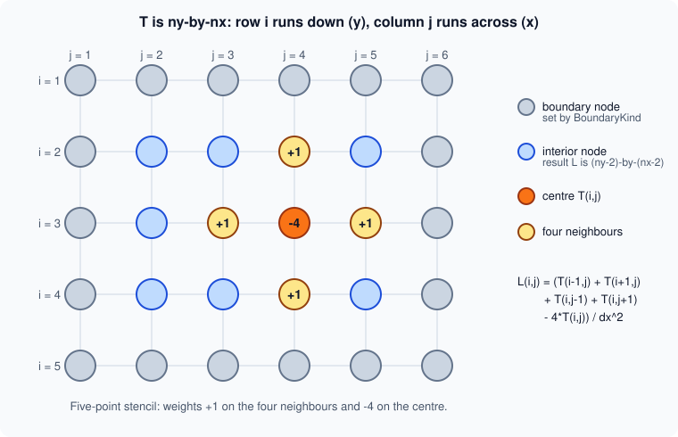
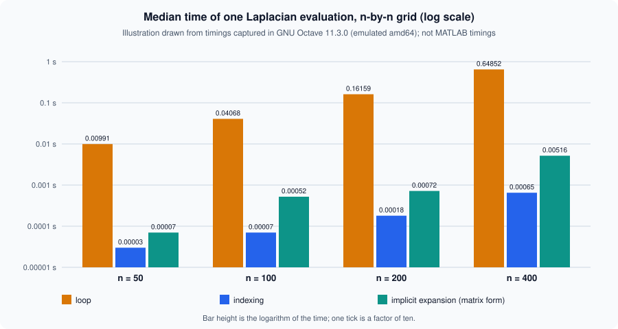

Vectorization and Preallocation
|
This content was generated with the assistance of AI and should be verified against the official documentation before being relied on in production. |
Written against MATLAB R2026b. The sessions in the "Octave 11.3.0 output" blocks were run in GNU Octave 11.3.0, using only code that Octave also accepts. Octave has no timeit, so every timing below was taken with tic and toc inside a small helper that reports the median of five runs. These are Octave timings, taken in an emulated (amd64) Docker container, and they are not MATLAB timings: MATLAB’s execution engine optimizes loops very differently, so use the numbers only to compare the versions with each other, and measure on your own machine. Timings from MATLAB’s documentation are attributed to the documentation. Code that is not run here is labelled "not run here".
Two ideas make most MATLAB code fast. The first is vectorization: express an operation on a whole array in one statement, so that the library loops in compiled code. The second is preallocation: create an array at its final size before a loop fills it, so that MATLAB does not look for a bigger block of memory and copy the data at every step. A third group of habits (avoid needless copies, choose the right type, measure before optimizing) completes the picture. The page ends with the heatflow Laplacian written three ways and timed. How to measure properly is on Profiling and Timing; the array model is on Matrices and Arrays.
Measure first
The documentation’s page on measuring performance says to use timeit for a rigorous measurement of a function and tic/toc for portions of code that are not complete functions. timeit (introduced in R2013b) takes a handle to a function with no inputs, calls it several times and returns the median; the documentation warns that it gives unexpected results if used between tic and toc, around code that itself calls tic and toc, or recursively. The MATLAB pattern is therefore:
T = rand(400); dx = 1/399;
f = @() heatflow.laplacianLoop(T, dx); % a handle to a function with no inputs
t = timeit(f) % median time in secondsNot run here: timeit does not exist in Octave 11.3.0 (exist("timeit") returned 0), and heatflow.laplacianLoop is defined later on this page. The Octave helper used for the tables below is the same idea in a few lines:
function t = med(f, reps)
t = zeros(1, reps);
for r = 1:reps
tic; f(); t(r) = toc;
end
t = median(t);
endMeasure the whole program with the Profiler before optimizing a single line; the slow part is rarely where one expects.
Vectorization
The documentation defines vectorization as revising loop-based, scalar-oriented code to use MATLAB matrix and vector operations, and gives three reasons for it: appearance (the code looks like the mathematics in a textbook), fewer errors (fewer lines mean fewer places for a mistake) and performance (it often runs much faster than the loop). The first two hold even when the third does not. The documentation’s first example replaces a loop that fills y(i) = sin(t) with t = 0:.01:10; y = sin(t);.
| Pattern | Instead of a loop that… | Use |
|---|---|---|
Array operators |
applies one formula to every element |
|
Logical masks |
tests each element and keeps or changes some |
a logical array from a comparison, used as an index |
Cumulative functions |
keeps a running total |
|
Implicit expansion |
combines a row with a column, or a matrix with a vector |
|
Grouped accumulation |
adds each value to the bin of its label |
|
Reductions along a dimension |
sums, averages or searches rows or columns |
|
Logical masks
Comparison operators return a logical array of the same size, and a logical array used as an index selects the true positions. Cleaning a thermocouple row without a loop:
T = [21.4 22.0 NaN 23.1 -999 22.8 24.0 NaN];
bad = isnan(T) | T < -50; % mask of missing values and a placeholder
good = T(~bad) % keep the valid readings
T(bad) = mean(good); % overwrite only the bad positions
TOctave 11.3.0 output:
good =
21.400 22.000 23.100 22.800 24.000
T =
21.400 22.000 22.660 23.100 22.660 22.800 24.000 22.660Filling with the mean is shown only to make the point about masks; real sensor data is cleaned with fillmissing and rmmissing (see Missing Data). The logical operators and indexing are on The Logical Type and Conditions and Indexing.
Cumulative functions
The documentation’s example computes the cumulative sum of a vector at every fifth element. The loop calls sum(x(1:n)) for each n, which adds the same leading elements again and again; cumsum visits every element once, and indexing every fifth entry finishes the job. The same idea integrates a sampled rate: the heatflow sensors report heat input in watts at a fixed step, and cumsum(q)*dt is the energy delivered so far.
dt = 0.5; q = [2 4 1 3 5]; % power samples
cumsum(q)*dt % energy after each sampleOctave 11.3.0 output:
ans =
1.0000 3.0000 3.5000 5.0000 7.5000Grouped accumulation with accumarray
accumarray(ind, data) sums the elements of data that share the same index in ind; with a function handle as the fourth argument it applies that function to each group, and accumarray(ind, 1) counts the elements of each group. The documentation lists groupsummary and groupcounts as alternatives that return the same numbers. The sensor identifiers of the heatflow log, once converted to integers, make a loop-free per-sensor mean:
id = [1 2 1 3 2 1 3 3]';
v = [20.1 22.4 20.5 18.9 22.0 20.3 19.2 19.0]';
sums = accumarray(id, v)
counts = accumarray(id, 1)
means = accumarray(id, v, [], @mean)Octave 11.3.0 output:
sums =
60.900
44.400
57.100
counts =
3
2
3
means =
20.300
22.200
19.033For categorical sensor IDs in a table, groupsummary and findgroups with splitapply are the table-oriented forms (see Tables).
Source: MATLAB documentation: accumarray
Implicit expansion
A row and a column combine into a grid, and a matrix minus a row subtracts the row from every row. The documentation shows A - mean(A) replacing a loop over columns, and a function of two variables evaluated on a grid as F = x.*exp(-x.^2-y.^2) with x a column and y a row, without a call to meshgrid. The full rule, the older bsxfun and repmat forms and the accidental-expansion pitfall are on Implicit Expansion and Compatible Sizes. It is also the basis of the third Laplacian below.
Preallocation
Growing an array inside a loop forces MATLAB to find a larger contiguous block, copy the old data into it and free the old block, every time the array grows. The documentation says that repeatedly resizing arrays often requires MATLAB to spend extra time looking for larger contiguous blocks of memory and then moving the array into them, and that preallocating the maximum amount of space can improve execution time. Its example fills a million-element vector in a for loop; on the documentation’s machine the growing version takes about 0.30 s and the preallocated one about 0.012 s.
n = 1e5;
% grows at every step
x = 0;
for k = 2:n
x(k) = x(k-1) + 5;
end
% preallocated: same loop, final size known
x = zeros(1, n);
for k = 2:n
x(k) = x(k-1) + 5;
end
% vectorized: no loop at all
x = 5*(0:n-1);Octave 11.3.0 output of the three variants wrapped in functions, with isequal between them and the median of five tic/toc runs:
ans = 1
ans = 1
grow 0.11775 s preallocated 0.10133 s vectorized 0.00010 sThe Octave result does not show the large gap that the documentation reports for MATLAB at one million elements: at this size Octave’s interpreter overhead dominates both loops, and the vectorized form is roughly a thousand times faster than either. That is itself a lesson. The cost of growing depends on the implementation and the array size, the vectorized form wins everywhere, and preallocation is cheap insurance that never hurts.
Choosing the creation function
The documentation lists the preallocation function for each kind of array: zeros for numeric arrays, strings for string arrays, cell for cell arrays and table for tables. For another class, create the array directly in that class rather than converting a double array: zeros(100,"int8") builds the 100-by-100 int8 matrix at once, whereas int8(zeros(100)) first builds a full double matrix and then converts it, costing time and memory. zeros also accepts like=p to match the class of a prototype.
A = zeros(100, "int8"); % one allocation, class int8
B = int8(zeros(100)); % a double matrix, then a conversion: avoid
C = zeros(2, 3, like=single(1)); % same class as the prototypeOctave 11.3.0 returned the class int8 for both of the first two spellings, so the difference is in the intermediate double array and not in the result; Octave was not used to measure that cost. The like= form is not run here.
Since R2024a, createArray generalizes this to almost any class, with a fill value: createArray(3,"int8") is a 3-by-3 matrix of 8-bit zeros, createArray(5,1,"datetime") a column of NaT, and createArray(2,3,Like=single(1+1i),FillValue=NaN) a 2-by-3 single complex array filled with NaN. It is not run here (Octave has no createArray), and code that uses it needs R2024a or later.
S = createArray(1, 5, "single"); % 1-by-5 single zeros
D = createArray(5, 1, "datetime"); % 5-by-1 datetime, all NaT
F = createArray(2, 3, FillValue=NaN); % 2-by-3 double filled with NaNCell arrays and structures
cell(1,n) preallocates a cell array of empty cells, and a structure array is preallocated by repeating a template structure (repmat(struct(...),1,n)) or by assigning to the last element first. Octave 11.3.0 ran this fill of a preallocated cell and structure array:
c = cell(1,3);
for k = 1:3, c{k} = k*ones(1,k); end
s = repmat(struct('t',0,'v',0), 1, 3);
for k = 1:3, s(k).t = k; s(k).v = 10*k; end
[s.v]Octave 11.3.0 output of [s.v]:
ans =
10 20 30The layout matters as much as the allocation. The documentation explains that a numeric array has one header, while a cell array or structure keeps a header per cell or per field. Its comparison: a scalar structure with three 100-by-50 fields needs 7 headers and about 120 KB, but a 100-by-50 structure array with three scalar fields needs 15,004 headers and about 1.9 MB for the same data. When the data is regular, prefer a structure of arrays, a matrix or a table to an array of scalar structures.
Copy-on-write and in-place operations
MATLAB passes arguments by value, but it does not copy the data until someone changes it. The documentation describes copy-on-write: after B = A both variables reference the same memory, and a copy is made only when A or B is modified. Function arguments work the same way. If the called function only reads its input, no copy is made, however large the array; if it modifies its local copy of the input, MATLAB makes the copy at that moment and the caller’s variable is unchanged. The documentation contrasts Y = X.*1.1 (the input is shared) with X = X.*1.1 (the input becomes an independent copy). There are no references to values in MATLAB; to return a modified array, return it as an output.
function Y = zeroRow(X)
X(2,:) = 0; % modifies the local copy: X is copied here
Y = X;
end
A = magic(3);
B = zeroRow(A); % A keeps its valuesOctave 11.3.0 output (the semantics only; Octave was not used to look at memory):
A =
8 1 6
3 5 7
4 9 2
B =
8 1 6
0 0 0
4 9 2In-place assignment. When the result replaces the input, A = f(A), MATLAB can sometimes avoid even the temporary copy: if the function is a local function and its body does X = X.*1.1, the data is modified in place without allocating a new array. The documentation lists the restrictions: the optimization is not applied in scripts, at the command line, in calls to eval, or inside try/catch blocks; not to a nested function that can see the variable; not to a variable declared global or persistent; and not when the assignment needs array indexing, so a loop like X{i} = X{i}*1.1 still creates a temporary for each element. The practical rules follow.
-
Put large-array updates in functions (not scripts) and write
A = f(A)when the old value is not needed. -
Modifying a large input inside a function costs a full copy of that input for the duration of the call. Operate on the part you need, or return the result instead of modifying in place.
-
Avoid building huge temporaries:
A = zeros(1e6,1,"single")is cheaper thansingle(zeros(1e6,1)), which creates the double array first. -
Free what you no longer need (
clear bigVariable) before creating the next large one. -
While debugging, a variable being assigned in place may be inaccessible between its evaluation and its assignment, because MATLAB marks it as a temporary state.
When loops are fine
Vectorization is a means to clearer, shorter and usually faster code, not a rule that forbids loops. MATLAB’s documentation says a vectorized version "usually" runs faster than the loop, not always, and the techniques page names the real costs: resizing arrays and redundant work. Loops are the right tool when:
-
each step depends on the previous one (explicit time stepping of the heatflow plate, a recurrence, an iterative solver);
-
the loop body is expensive compared with the loop overhead (a call to
ode45, reading a file, fitting a model), so the overhead is a rounding error; -
the loop runs over a few items (files in a folder, sensors, parameter sets);
-
the vectorized form would build a huge temporary (a million-by-million grid from implicit expansion) or be unreadable;
-
the logic has early exits (
break,return) or branches that differ per element.
The documentation’s techniques page adds the habits that cost nothing: use functions rather than scripts for performance-critical code, move computations that do not change out of the loop, use the short-circuit operators && and ||, avoid overloading built-in functions, create a new variable instead of reusing one with a different type or shape, avoid "data as code" (a long list of constants should be loaded from a MAT or CSV file), and avoid state-querying and indirect-evaluation functions (eval, evalin, feval(fname) with a character vector, inputname, which, whos, exist(var), dbstack, clear all) and changing the path at run time. The documentation says the last of these causes recompilation, and the eval family is covered on eval and Its Alternatives.
| Habit | Why |
|---|---|
Functions instead of scripts |
the documentation says functions are generally faster |
Local functions over nested ones |
when the function does not need the outer variables |
Hoist loop-invariant work |
the same value is not recomputed on each pass |
Short-circuit |
the second operand is evaluated only when needed |
|
indirect evaluation from text is expensive |
Do not change the path in a loop |
the documentation says it triggers code recompilation |
arrayfun is not a faster loop
arrayfun(func, A) applies func to the elements of A one at a time and concatenates the results. The documentation notes that you cannot specify or rely on the order in which the elements are calculated. It is a convenience, a loop written as a call; it still calls the function once per element, so it is not vectorization. The same holds for cellfun and structfun. Octave 11.3.0 timed an element-wise formula three ways on 100000 numbers (median of five runs; the largest difference between the loop and the vectorized result was 4.4e-16, a rounding difference):
x = rand(1,1e5);
f = @(v) v^2 + 3*v;
b = arrayfun(f, x); % a call per element
c = x.^2 + 3*x; % one expression on the whole arrayOctave 11.3.0 output (values from Octave’s random generator, which differs from MATLAB’s):
loop 0.15464 s arrayfun 0.09901 s vectorized 0.00012 sIn Octave arrayfun was a little faster than the explicit loop, and both were about a thousand times slower than the vectorized expression. MATLAB’s relative result for arrayfun and a loop depends on the release; the documentation promises neither. Use arrayfun when the result needs it (UniformOutput=false to collect results of different sizes, or several outputs), and a vectorized expression whenever one exists. Not run here: any MATLAB timing of this comparison.
Source: MATLAB documentation: arrayfun
The Laplacian three ways
The heatflow plate (see the heatflow scenario) evolves under heat diffusion, whose spatial part is the Laplacian of the temperature field. On a square grid with spacing the five-point stencil approximates it at an interior point:

The function takes the temperature matrix T and the spacing dx and returns the stencil values at the interior points, an array two rows and two columns smaller than T (the boundary values are given by the boundary condition, see Enumerations for BoundaryKind). Three functions in the heatflow namespace compute the same thing, in the files +heatflow/laplacianLoop.m, +heatflow/laplacianIndexed.m and +heatflow/laplacianExpanded.m (namespaces are on Namespaces and Class Folders). In the project, heatflow.laplacian calls the indexed version.
Version 1, the loop. It transcribes the formula: for every interior point, read five elements and write one.
function L = laplacianLoop(T, dx)
[nx, ny] = size(T);
L = zeros(nx-2, ny-2); % preallocated
for j = 2:ny-1
for i = 2:nx-1
L(i-1, j-1) = (T(i-1,j) + T(i+1,j) + T(i,j-1) + T(i,j+1) ...
- 4*T(i,j)) / dx^2;
end
end
endThe only performance measure it takes is preallocating L. The loops run down the columns because MATLAB stores arrays column by column (see Matrices and Arrays), so the inner loop walks consecutive memory.
Version 2, vectorized with indexing. The four neighbours of every interior point are four shifted views of the same matrix; T(2:end-1,2:end-1) is the interior and the other slices are the interior shifted by one row or column. The whole matrix is processed by array operators.
function L = laplacianIndexed(T, dx)
L = (T(1:end-2, 2:end-1) + T(3:end, 2:end-1) ...
+ T(2:end-1, 1:end-2) + T(2:end-1, 3:end) ...
- 4*T(2:end-1, 2:end-1)) / dx^2;
endVersion 3, matrix form with implicit expansion. The second difference along the columns is a product with a tridiagonal matrix: with holding 1 beside the diagonal and -2 on it. The matrix is built without a loop from the distance between a column and a row of indices, which is implicit expansion; the result is cropped to the interior.
function L = laplacianExpanded(T, dx)
[nx, ny] = size(T);
i = (1:nx)'; j = 1:nx; % column against row
Dx = double(abs(i - j) == 1) - 2*double(i == j);
k = (1:ny)'; l = 1:ny;
Dy = double(abs(k - l) == 1) - 2*double(k == l);
S = (Dx*T + T*Dy) / dx^2;
L = S(2:end-1, 2:end-1);
endThe tridiagonal matrices are dense here, so the cost grows like instead of and this version is the least efficient of the two vectorized ones for large grids; it is shown because it expresses the stencil as linear algebra and because it uses implicit expansion for a task that older code did with repmat or meshgrid. The scalable matrix form uses a sparse (see Sparse Matrices and Graphs, where the same operator is assembled with spdiags and kron).
Same answers
Octave 11.3.0 ran the three on a small 8-by-6 field T = sin(pi*x) .* (1 + y.^2) with x = (0:5)*0.2 a row and y = (0:7)'*0.2 a column and dx = 0.2, comparing the vectorized results with the loop’s:
A = laplacianLoop(T, dx); B = laplacianIndexed(T, dx); C = laplacianExpanded(T, dx);
size(A)
max(abs(A(:) - B(:))), max(abs(A(:) - C(:)))Octave 11.3.0 output:
ans =
6 4
ans = 0
ans = 3.1974e-14The indexed version matches the loop exactly because both evaluate the same sum in the same order; the matrix form differs by about 3e-14, because the matrix product adds the terms in a different order. Floating-point sums are not associative (see Numeric Types and Floating Point), so compare with a tolerance (abs(A-C) < 1e-10, or AbsTol in a test) and never with == or isequal when the order of operations differs.
Timings
Octave 11.3.0 timed each version on rand(n) for four grid sizes, with dx = 1/(n-1) and the median of five tic/toc runs. Not MATLAB timings. Run-to-run variation in this emulated container was noticeable (the 100-by-100 matrix-form time changed by almost a factor of two between two runs, from 0.0003 s to 0.0005 s), so read the orders of magnitude, not the digits.
| n | Loop (s) | Indexing (s) | Matrix form (s) | Loop / indexing |
|---|---|---|---|---|
50 |
0.00991 |
0.00003 |
0.00007 |
about 330 |
100 |
0.04068 |
0.00007 |
0.00052 |
about 580 |
200 |
0.16159 |
0.00018 |
0.00072 |
about 900 |
400 |
0.64852 |
0.00065 |
0.00516 |
about 1000 |

The figure is an original illustration of the table above, drawn on a logarithmic axis; it is not a MathWorks figure and shows no MATLAB measurement.
What the numbers say:
-
The loop grows with the number of grid points, as it should (4 times the points, about 4 times the time), but it is 300 to 1000 times slower than the indexed version here. The gap in MATLAB is expected to be smaller, because its execution engine optimizes loops, but it has not been measured here; vectorized array code is still the form to try first for a stencil. Measure with
timeiton your machine. -
The indexed version is the fastest and has the least code. It allocates five temporary slices; for very large fields a loop over column blocks, or fewer temporaries, can reduce the memory cost.
-
The matrix form is slower than indexing and its gap widens with
n, as the extra order of growth predicts, and it needs a dense matrix for each direction.
A MATLAB harness for the comparison (not run here, because timeit and the namespace are not available in Octave):
for n = [50 100 200 400]
T = rand(n); dx = 1/(n-1);
t1 = timeit(@() heatflow.laplacianLoop(T, dx));
t2 = timeit(@() heatflow.laplacianIndexed(T, dx));
t3 = timeit(@() heatflow.laplacianExpanded(T, dx));
fprintf("n=%4d loop %9.5f indexed %9.5f expanded %9.5f\n", n, t1, t2, t3);
endMemory
Performance and memory go together. The documentation’s memory page recommends the smallest class that does the job (single is 4 bytes and double 8; uint8 and logical 1; the integer classes support arithmetic but not all of the math), importing data directly into the right class (fread(fid,1e3,"uint8=>uint8") uses 1 KB instead of 8 KB for 1000 bytes), sparse storage for data with many zeros (an identity matrix of order 1000 takes about 8 MB full and about 24 KB sparse), avoiding temporary copies, and clearing variables that are no longer needed. The documentation also warns that a growing array can briefly need two copies in memory: when the contiguous block runs out, MATLAB allocates the new block while the old data is still there, so repeatedly resizing a large array may cause an out-of-memory error. Preallocation avoids that as well. For data larger than memory, see Large Data, Datastores and Tall Arrays.
Beyond one core
Techniques that need no toolbox are on this page and on Background and Asynchronous Execution, which covers running a function in the background with parfeval and backgroundPool. Running iterations in parallel (parfor) and on a GPU (gpuArray) need the Parallel Computing Toolbox, described with the other products on Toolboxes and Add-On Products; none is used on this page.
Pitfalls
-
Optimizing before measuring. A loop is often not the bottleneck; profile first (Profiling and Timing).
-
Timing with a single
tic/toc. A first call includes one-time costs and the clock is noisy; usetimeit, or repeat and take the median. -
Comparing with
==. The vectorized form can differ from the loop in the last digits; compare with a tolerance. -
Orientation. A row and a column combine into a matrix under implicit expansion; check
sizewhere a vector is expected. Sizes that cannot expand (a 3-by-4 and a 4-by-3 matrix, say) stop with "Arrays have incompatible sizes for this operation.", identifierMATLAB:sizeDimensionsMustMatch. -
Giant temporaries. A fully vectorized expression with implicit expansion can need far more memory than the loop; the Laplacian’s matrix form needs dense matrices. A request larger than the array size limit in the Workspace settings fails before any work with identifier
MATLAB:array:SizeLimitExceeded("Requested … array exceeds maximum array size preference"), and one that passes that check but cannot be allocated fails with "Out of memory.", identifierMATLAB:nomem. -
Preallocating with the wrong class.
zeros(n,"int8"), notint8(zeros(n)). -
Growing a result in a loop with
end+1(x(end+1) = v) or concatenation, when the final size is known or can be bounded. -
Assuming
arrayfunhelps. It does not compile the function away; it is a loop. -
Relying on documentation timings. The numbers in MATLAB’s documentation come from the documentation’s machine and release; yours will differ.
Where older books differ
Advice written for MATLAB 5 to 7, the era of the Primer by Davis (written for R2010a), often says to avoid loops at all costs. That advice predates the just-in-time (JIT) acceleration of loops that MATLAB’s execution engine now applies, and the current documentation pages consulted for this page do not state the release in which it appeared. The current documentation still recommends vectorizing and preallocating (they are the first two programming practices of its techniques page), but as practices, not as a prohibition; the first thing to do is to measure.
Three other forms are outdated. Combining arrays of different sizes with bsxfun or repmat(mean(A),size(A,1),1) is replaced by implicit expansion since R2016b. Timing by subtracting clock values with etime is replaced by tic/toc and timeit (introduced in R2013b). Preallocating a non-double array by converting a zeros result (int8(zeros(n))) is replaced by zeros(n,"int8") and, since R2024a, createArray.